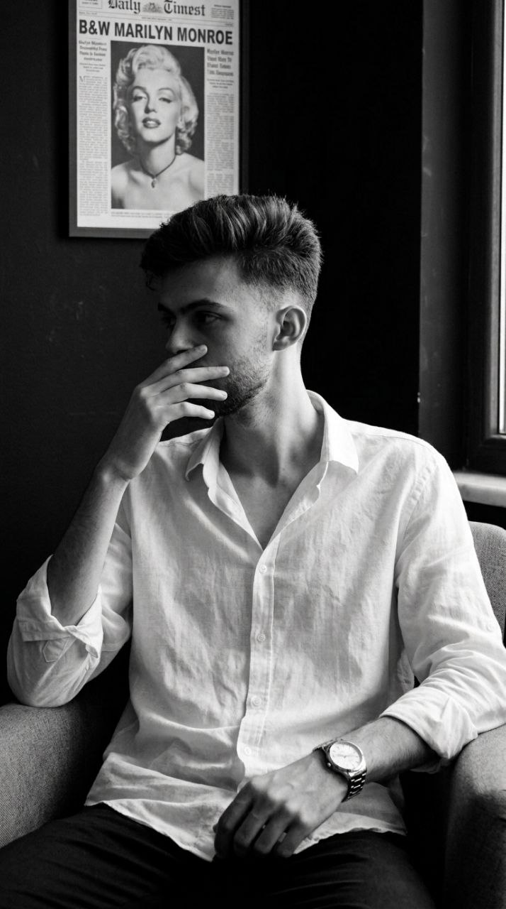

Front-End Developer | Independent Projects Designing and developing responsive, interactive web applications using HTML5, CSS3, and JavaScript. Optimizing UI/UX performance and building custom client-side web tools. Videographer & Team Leader | SharafAI Initiative Directed and edited promotional and educational video content for digital platforms. Led the Orange Team, overseeing project workflows and creative media production. Social Media Manager & Editor | Freelance Managed social media strategies and content publishing for over 6 years. Produced high-quality video content using CapCut and VN to enhance viewer engagement.
Read More